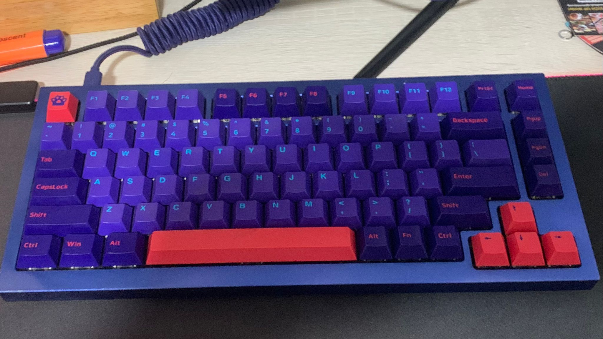

Back in late of 2021, I had gained an interest in custom made keyboards after learning about computers. This made me want to try building a custom keyboard. The world of keyboards is HUGE, it starts with the basic mechanical or membrane keyboard. The main difference between mechanical keyboards and membrane keyboards is that mechanical keyboard when actuated, activates a mechanical switch, sending a signal from the switch straight to the computer to register the keystroke, while membrane keyboards pushes down on a rubber dome, which then pushes against a circuit board to register the keystroke. This makes mechanical keyboards much faster than membrane keyboards in registering a keystroke. Not yet on the point that mechanical keyboards sound and feel much better than membrane keyboards. Membrane keyboards offer a mushy feeling only while Mechanical keyboards have three kinds of switches to choose from, tactile which offers a bump before actuating, clicky with is like the tactile switch but with a click and linear which is smooth all the way down to hit the switch base
I decided on the keychron Q1 hot swappable with the Gateron black inks. I decided on the keychron Q1 as it fit my criteria of being aluminium, hot swappable and under two hundred dollars which was within my budget of 400 dollars for the whole keyboard. I learnt to modify a keyboard which made the keys smoother and what the community calls "thockier", which just meant that it was deeper and a fuller sound. I did the tape modification which was popular back then to make the keyboard "poppy". The final product is something I am very proud of. A beautiful looking keyboard with a poppy sound. I learnt through this experience how a keyboard really works in more detail. Maybe my next project would be a custom mouse, but that's a topic for another time.
I created this website as I was curious on how website building works and why HTML was such a popular programming language used in website building. I have a passion to find out more about programming and how this can be implemented into the everyday items we use and how coding is able to change our lives in the future for the better. A quality about myself is when I am passionate about something I would go to a deeper level to understand more about that thing.
I used a HTML template for this website called "This is Massively". I do not claim all this work for my own and I admit that I did not build the website from scratch. I have learnt much about HTML through the development of this website. Although I do not understand everything in this code. I believe that having the passion to learn a skill is better than having the skill but not using it. I am proud to understand the basics of HTML and I hope that Singapore Polytechnic will be able to hone this passion of mine that I may be able to code programmes such as this from scratch.